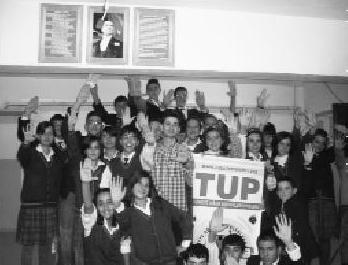

Dört duvarın soğukluğu, çocuk yuvalarının çaresizliği, ilkokulların, liselerin yorgunluğu… Bununla birlikte bunlara karşı çaba gösteren birilerinin varlığı. Başta heyecan, seminer esnasında keyif, sonrasında iyi bir şey yapmış olmanın tebessümü… (Ahmet Maloğlu)
Hacettepe'de bir konferans vereceğim. Ben de öğrencilerin arasındayım. Seminerin başlamasına da daha 10 dakika var . Biri telefonla konuşuyor. "Birader ben bu adamı dinledim. Çok kaprisli biri. Telefona problem çıkarır, takar sana" dedim. "Ben onun cevabını veririm, merak etme sen" dedi. Beni anons ettiler, çıktım kürsüye. Ahmet'le göz göze geldik, gülüştük. Bu genç girdiği her yerde ışıldar. Projenin lideri her sene değişir. 2009'da Ahmet'ti. Liderlik vasıfları olan, şahane eğitimler veren, idealist bir genç. Arada Botanik Parkı'na gidip temizlik yaptığını bile duydum. Seni seviyoruz Ahmet.